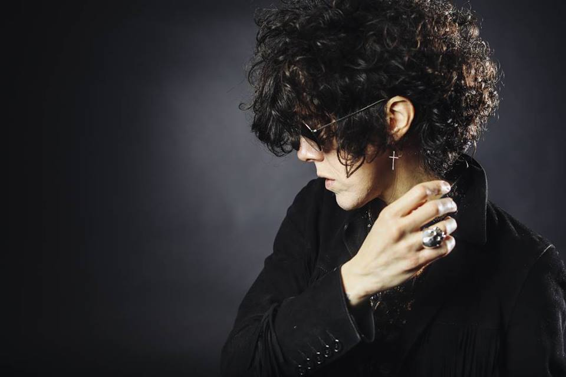
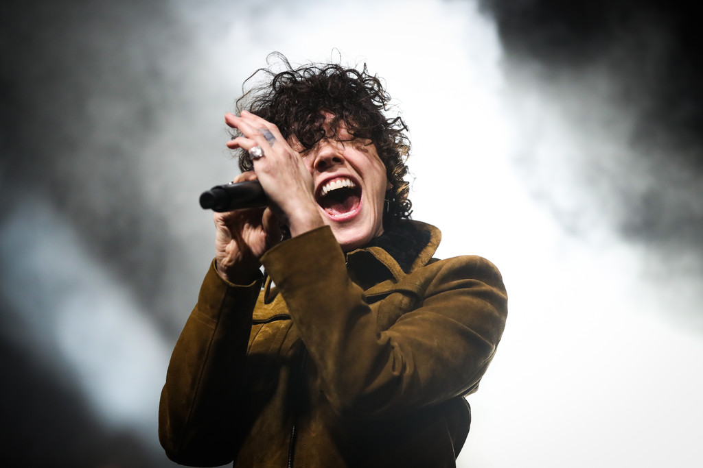
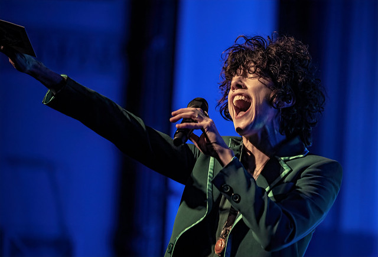

David Lowery of the band Cracker saw LP performing and featured them on "Cinderella", a hidden track on the band's 1998 album, Gentleman's Blues.[8] Lowery followed up by producing LP's debut album Heart-Shaped Scar, released in 2001 through Koch Records. LP's second album, Suburban Sprawl & Alcohol, was released in June 2004 through Lightswitch Records. On the record,they collaborated with songwriter and music producer Linda Perry. However, in spite of extensive touring to promote the release and positive reviews from music critics, the album failed to gain widespread recognition.
In 2006, LP appeared at the music conference South by Southwest and reportedly sparked a bidding war amongst major music labels, eventually being signed by L.A. Reid to his Island Def Jam Music Group record label, part of the Universal Music Group. However, due to artistic differences LP left the contract. They signed with SoBe Entertainment in 2007, an independent record label, with the album tracks they had written at the major label."Love Will Keep You Up All Night", one of the tracks they had written at Island Def Jam Music Group with Billy Mann, was released in late 2007 on the Backstreet Boys album, Unbreakable. LP wrote and performed "Wasted", from the album Suburban Sprawl & Alcohol, which was the theme song for a television show, South of Nowhere, on The N, currently known as TeenNick. MTV's The Hills also featured LP's song "Damage Is Done" in mid-2010, and it was released on iTunes.
During 2009, LP started writing songs for other artists, including several songs which ended up on Heidi Montag's album, Superficial (Warner Music).LP co-wrote the single, "More Is More", as well as the album tracks, "Twisted", "Hey Boy" and "Love It or Leave It". They also co-wrote other tracks for and with Montag, such as the Cathy Dennis co-written, "Look How I'm Doin'", "I Do This" and "Who's That Girl". A song LP wrote with Alexander Kronlund, "Standing Where You Left Me", was released on Erik Hassle's debut UK album, Pieces (Roxy/EMI/Universal). LP moved to Los Angeles in 2010.
In August 2010, it was announced that LP had signed with RedOne's record label, 2011 Records. LP landed their first major breakthrough as a songwriter, co-writing Rihanna's song, "Cheers (Drink to That)", featured on Rihanna's fifth studio album Loud, released on November 12, 2010, on Def Jam Recordings. "Cheers" features a vocal hook performed by LP (taken from Avril Lavigne's "I'm with You"). In a 2010 interview with MTV News, Rihanna said: "I love that song ("Cheers"). That is one of my favorite songs on the album. It makes you feel like celebrating. It gives you a great feeling inside like you want to go out and have a drink. ... People can't wait for the weekend."[14] LP's major label songwriting breakthroughs continued, and they co-wrote "Beautiful People", performed by Christina Aguilera. The song is featured on the Burlesque: Original Motion Picture Soundtrack album, which was released on November 22, 2010, through RCA Records.
In June 2011, LP co-wrote "Afraid to Sleep", which was performed by NBC's The Voice finalist Vicci Martinez and reached #10 on the iTunes Top Singles Chart. In September 2011, LP signed a deal with Warner Bros. Records. Shortly after, "Into the Wild", written and performed by LP, was prominently used in a Citibank national television advertisement campaign. In April 2012, LP released their first major label album, Into the Wild: Live at EastWest Studios, a five-song live extended play, and started touring extensively including festivals such as SXSW, Bonnaroo, Lollapalooza, Bumbershoot, Tropfest as well as Tokyo's Sonic Boom and London's Hyde Park. In 2012, LP became the first female (at the time they are now gender neutral) Martin Guitar ambassador.
In May 2012, LP was featured as the Artist of the Week in Vogue magazine. Over the following two years, they completed the recording of their album that included collaborations with Billy Steinberg, Isabella "Machine" Summers (from Florence and the Machine), Josh Alexander, Claude Kelly, Justyn Pilbrow, Carl Ryden and Rob Kleiner. The album was produced by Rob Cavallo, Warner Bros. Records' chairman and producer. On April 1, 2014, it was announced that LP's third full-length studio album would be titled Forever for Now and was scheduled to be released on June 3, 2014. The album was promoted by the lead single "Night Like This".Following the album, a second single, "Someday", was released in June 2014 in Canada.On September 16, 2014, a music video for "Tokyo Sunrise" officially premiered on Time magazine's website.
In September 2015, the song "Muddy Waters" was released as the first single from LP's fourth studio album Lost on You. In November 2015 one of LP's best known songs, "Lost on You" was released to great success. In June 2016, "Muddy Waters" featured in the violent and emotionally charged closing scene of the season four finale of Netflix's original series Orange Is The New Black. It was also featured in the trailer for the NBC show Shades of Blue. "Muddy Waters" clarifies the ending of season 5 episode 4 of Starz Power, as the layers of uncertainty and drama are revisited. In November, the album's eponymous second single was released, while LP held a residency at the No Vacancy club. Both songs originate from a collaboration with Mike Del Rio. An EP titled Death Valley was released on June 17, 2016.
The song "Hi Ho Nobody Home" by David Baerwald featuring LP was used in an episode of Mr. Mercedes. In 2017 LP performed the song "Back Where I Belong" (Otto Knows featuring Avicii) for episode 5 of season 2 of Netflix's original series Sense8. LP duets with Mylène Farmer on the single N'oublie pas, released on June 22. The single immediately hit number 1 on the French iTunes chart upon release. The track is the second single from Farmer's upcoming studio album Désobéissance.
On June 15, 2018, LP announced on their Facebook page that they had been working on a new album. A day later, the first track from the record, "Girls Go Wild" was released. 'Recovery' was released later. A Genius annotation for 'Girls Go Wild' was released on the 17 August 2018.In September 2018, LP recorded two songs for the singer Morrissey for his new album of cover songs.
In October 2019, the song "Strange" was featured on the commercial for the Samsung Galaxy phone.'How Low Can You Go' and 'The One That You Love' was released in 2020. 'One Last Time', 'Goodbye', and 'Angles' were released in 2021 All 5 songs were released as singles for the album 'Churches which was released on December 3. In December 2021, LP released a new album "Churches". In 2021, LP also released the song 'Fighter' with Imanbek.
All informations copied from Wikipedia, in April 23h, 2002. It's a exercise code's of HTML, CSS and JS.